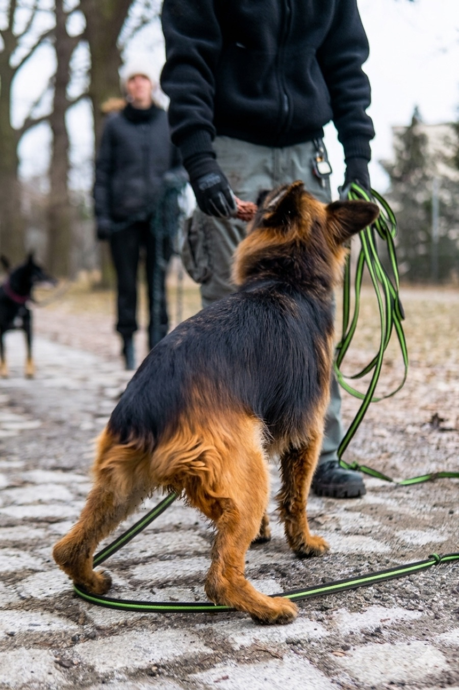

Mam na imię Chanel.
Jestem mieszanką owczarka niemieckiego —
małą jak na swoją rasę, ale z charakterem
znacznie większym.
Przeżyłam wypadek samochodowy.
Wróciłam do zdrowia.
I wiem teraz, czego chcę od życia.
Na początku jestem ostrożna. Obserwuję. Oceniam.
Ale kiedy zdecyduję, że ktoś jest wart mojego zaufania —
jestem jego. Bez reszty.
Kocham spacery (długie, nie symboliczne).
Kocham zabawki. Lubię kiedy jest coś do roboty.
I potrafię sprawić, że zaśmiejesz się z mojego wyglądu —
to mieszanka, która wyszła... oryginalnie.

Słowa to jedno. Oto ja w akcji.
Nie szukam kogoś, kto mnie „uratuje".
Szukam kogoś, kto podoła.
Jeśli to nie Ty — bez urazy.
Jeśli to Ty — czytaj dalej.

Partnera na spacery, który nigdy nie odmawia.
Kogoś, kto zawsze jest szczęśliwy, że wróciłeś/aś do domu.
Psa, który po czasie zaskakuje — swoją energią,
lojalnością i charakterem.
Nie jestem łatwa.
Ale jestem warta zachodu.
Adoptując mnie, nie zostajesz z tym sam/a.
Masz pytania — oni mają odpowiedzi.
Napisz do nas. Chanel oceni kandydaturę osobiście.
Lub zadzwoń: REPLACE_PHONE